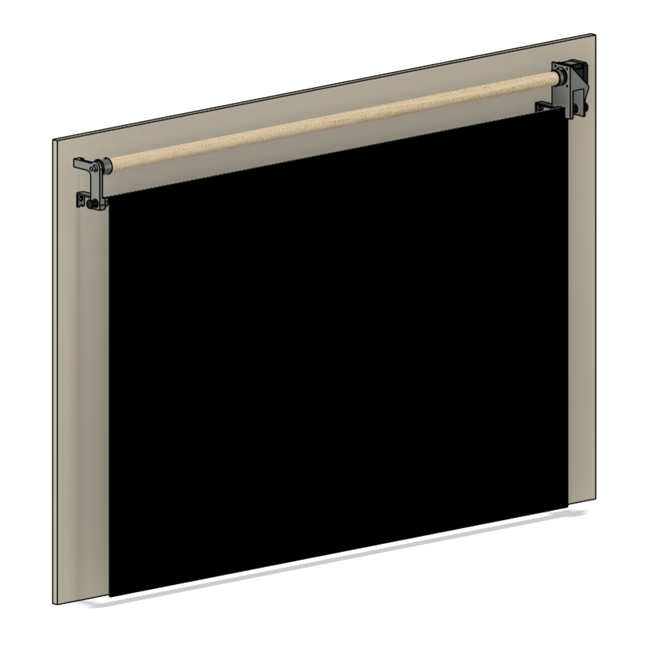

Smart Window Shade System


Project Overview
A motorized window shade controller built on a Raspberry Pi 4 that drives a NEMA 17 stepper motor via an A4988 driver to raise and lower a curtain hung from a wooden dowel rod. Features soft start/stop ramping, persistent step tracking, and an interactive speed control interface.
How It Works
The NEMA 17 stepper motor is mounted to the curtain rod via a 3D printed bracket. A 1-inch wooden dowel rod (~4 ft) is coupled to the motor shaft and spans the width of the window, holding the curtain. The opposite end of the dowel is supported by a 3D printed bearing bracket attached to the curtain rod.
When blinds.py up or blinds.py down is run, the motor turns the dowel to roll the curtain up or down. The system tracks the absolute step position in ~/.stepper_motor_steps so it always knows where the shade is, even after a reboot. Soft ramp-up and ramp-down logic prevents jerking at start and stop.
Hardware
Bill of Materials
| # | Item | Description | Qty |
|---|---|---|---|
| 1 | Curtain Rod | COTS standard curtain rod | 1 |
| 2 | Curtain | COTS curtain | 1 |
| 3 | NEMA 17 Stepper Motor | Motor to drive the dowel rod | 1 |
| 4 | A4988 Stepper Driver | Motor driver for the NEMA 17 | 1 |
| 5 | Raspberry Pi 4 | Main compute board running all software | 1 |
| 6 | 3D Printed Case | Enclosure for the Raspberry Pi and A4988 driver | 1 |
| 7 | Wooden Dowel Rod | 1 in diameter, ~4 ft long | 1 |
| 8 | 3D Printed Motor Bracket | Mounts NEMA 17 to the curtain rod on the motor side | 1 |
| 9 | 3D Printed Bearing Bracket | Supports non-motor end of dowel, mounted to curtain rod | 1 |
| 10 | Flex/Rigid Coupling | Connects the 3D printed motor adapter to the NEMA 17 shaft | 1 |
Wiring
The A4988 driver connects to the Raspberry Pi GPIO (BCM numbering). Motor runs in 1/16 microstep mode (MS1, MS2, MS3 all HIGH) for smooth and quiet operation — 1600 steps per revolution.
| A4988 Pin | RPi GPIO (BCM) | Purpose |
|---|---|---|
| DIR | 21 | Direction control |
| STEP | 20 | Step pulse |
| MS1 | 16 | Microstep select 1 |
| MS2 | 12 | Microstep select 2 |
| MS3 | 1 | Microstep select 3 |
| EN | 7 | Enable (active low) |
CAD Models
Four 3D printed parts were designed for this project: a motor bracket, bearing bracket, motor adapter, and an enclosure for the Pi 4 and A4988 driver.


Software
All scripts are written in Python and interface directly with the Raspberry Pi GPIO pins.
| Script | Description |
|---|---|
blinds.py | Primary script. Moves shade up or down with soft ramp-up/ramp-down. Enforces step limits (0–23500). |
test.py | Interactive test script with live keyboard speed control (arrow keys) and direction switching. |
get_steps.py | Prints the current saved step position. |
set_steps.py | Resets the step counter to 0. Run after manually homing the shade. |
disable.py | Disables the motor by setting the EN pin HIGH, releasing holding torque. |